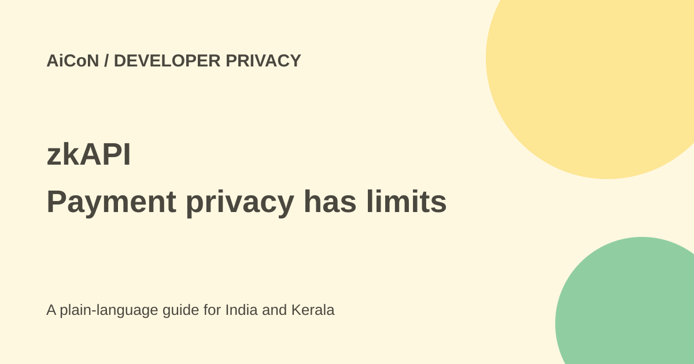

zkAPI: private payment links, not private prompts
zkAPI uses zero-knowledge proofs to separate prepaid API usage from a payment identity. The provider still sees prompts. Public transactions, network details and repeated personal content can still weaken privacy.

What problem does it address?
Ordinary API usage is tied to an account and billing record. zkAPI uses a private note and proofs to show that a request has funds without revealing which deposit paid for it. This is a payment-link protection, not encryption of the prompt from the AI provider.
The Ethereum Foundation launch describes a local client compatible with existing OpenAI and Ollama API apps. In direct runtime-key mode, requests go to the provider. A simpler proxy mode relays them through a server, which sees the traffic.
Read the current deployment docs
The launch describes a mainnet vault holding USDC and discusses ETH and other credits. The current Open Anonymity docs describe native ETH funding and short-lived OpenRouter keys for protocol v2. These are not interchangeable setup instructions.
Confirm the exact protocol, chain, contract and payment asset for the deployment you intend to use. Do not send a token to an address just because a launch article mentions it.
Privacy limits
The upstream model provider sees prompts and responses. IP address, timing and reused personal details can link sessions. Deposits and withdrawals are public. A repeated project document or writing style can become a fingerprint even without a billing identity.
The current docs say the construction is not post-quantum and the checked-in proving keys use a single-party setup without a multiparty ceremony. File hashes identify artefacts but do not establish setup security. No cryptographic audit was independently verified for this guide.
How to evaluate without risking mainnet funds
- Read the Foundation launch and the exact deployment's current docs.
- Understand direct-key versus proxy mode and who can see content.
- Confirm protocol version, funding asset, contract and recovery method from the deployment's official sources.
- Use a documented test deployment with test funds first, where available.
- Use invented prompts with no private identifiers or copied conversation history.
- Learn how private note state, recovery and withdrawal work before funding anything real.
- Review independent security evidence, transaction costs and local legal or tax obligations.
- Only consider a real deposit after understanding loss risk and checking the final destination. No deposit is needed to read this guide.
Costs and India verdict
This is not free model usage. You prepay metered calls and may pay blockchain transaction fees. Asset prices and network fees can change, and lost note state or a wrong transfer can be expensive.
No stable INR total or India-specific legal assurance is confirmed. It is an advanced developer tool, not a recommended shortcut for ordinary users. Do not deposit money based solely on a privacy claim.
What changed since the original post?
We added the current ETH/OpenRouter deployment details and single-party setup caveat, and kept them separate from the Foundation's USDC mainnet description. No wallet was connected, software installed or money deposited.
Frequently asked questions
Can the model provider read prompts?
Yes. Payment privacy does not hide the content it processes.
Does it hide my IP?
No. Network anonymity is a separate concern.
Can I fund every deployment with the same asset?
No. Check the exact deployment's supported asset and contract.
Sources: Ethereum Foundation launch · Current Open Anonymity docs · Current deployment site. Checked 7 October 2026.